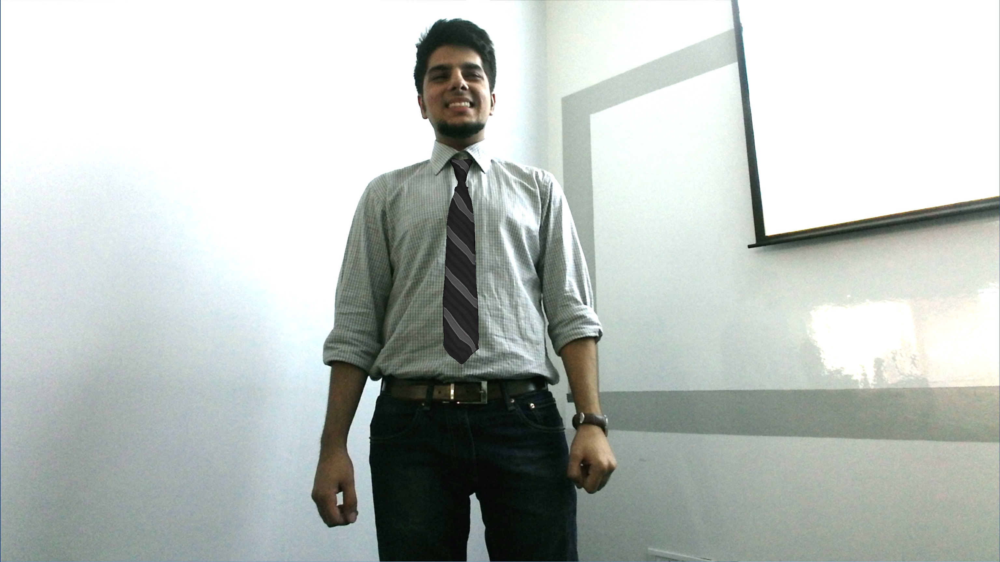
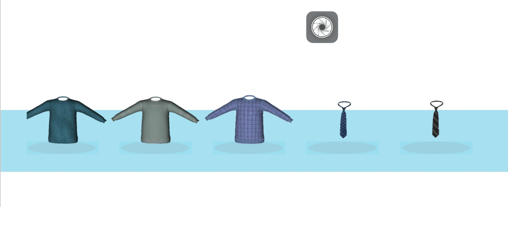
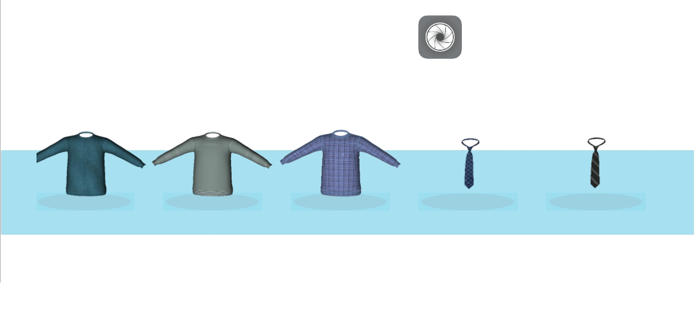

The Virtual Trial Room is a simulation of a trial room experience.
The idea is to give the user the opportunity to experience clothing in a lifelike virtual setup. Real-time cloth simulation and an intuitive gesture-based interface - “grab, scroll and release” - gives our customers swifter access to a wider collection of apparels.
This has been achieved using augmented reality which basically uses video feed from the Kinect sensor to produce a composite view of the user with the product suited to his/her configuration. Using a 3D-model of the product, we configure it to match the dimensions of the user and superimpose it on the Kinect video feed to generate a composite view of the user with the clothing item that follows cloth dynamics in real-time.
The 3D models of clothing generated in 3DX Max/Blender were rigged with bone structures which were then superimposed on the bone structure identified by the Kinect feed. The real-time cloth simulation was achieved in Unity 4 Framework.

The application could also click photographs of the customer while interacting with the apparel, to share later with friends and family. It also made size recommendations by studying the ratios between shoulder length, waist, and length of the spine.

 
